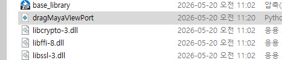
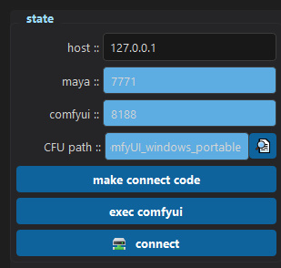
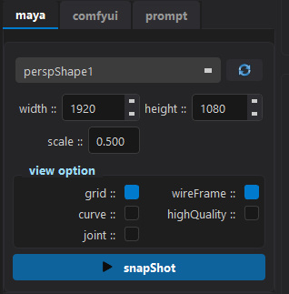
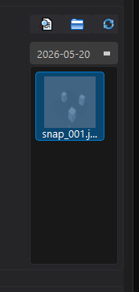
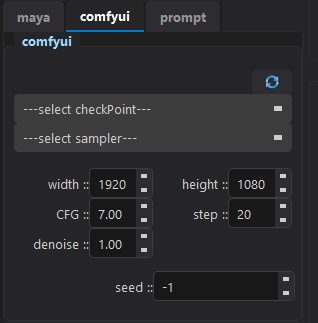
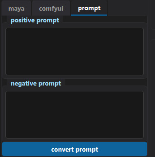
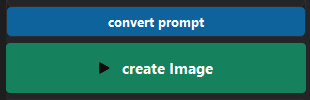

1. 사전 준비 (최초 1회)
원활한 구동을 위해 아래의 구성 요소가 시스템에 설치되어 있어야 합니다.
- Visual C++ Redistributable: 대부분의 PC에 기본 설치되어 있습니다. (실행 오류 발생 시 Microsoft 공식 배포 페이지에서 다운로드 및 설치)
- NVIDIA Studio 드라이버: VRAM 6GB 이상을 권장합니다. 안정적인 그래픽 작업을 위해 NVIDIA 공식 홈페이지에서 자신의 그래픽 카드에 맞는 'Studio 드라이버'를 다운로드하여 설치합니다.
- ComfyUI: ComfyUI 릴리즈 페이지에서
ComfyUI_windows_portable_nvidia.7z파일을 다운로드한 뒤, 원하는 드라이브에 압축을 해제합니다. - CheckPoint 모델: Civitai 와 같은 AI 모델 공유 사이트에서
3dAnimationDiffusion등 SD 1.5 기반의.safetensors파일을 다운로드합니다. 다운로드한 파일을 압축 해제한ComfyUI/models/checkpoints/폴더 안에 직접 넣어줍니다. - Ollama: 한국어 프롬프트 인식을 위해 Ollama 공식 홈페이지에서 다운로드 후 설치 프로그램만 실행하여 완료하시면 됩니다. (설치 후 윈도우 우측 하단 시스템 트레이에 Ollama 아이콘이 떠 있는지 확인)
- Maya: 2020 버전 이상.
2. 씬 연결 (매 작업 시 실행)
- Ollama 프로세스 및 Maya 씬이 열려있는지 확인 후
mayafy.exe를 실행합니다. - ComfyUI Path 설정: UI의 탐색기 버튼을 클릭하여
ComfyUI_windows_portable_nvidia폴더를 지정합니다. - 마야 연결 코드 등록:
make connect code버튼을 클릭하여 열린 폴더의dragMayaViewPort파일을 통째로 마야 뷰포트에 드래그 앤 드롭합니다.
※ mayafy 폴더 경로가 변경된 경우 재등록이 필요합니다.
- Shelf 실행 및 연결: 마야 셸프(Shelf)에 생성된
comfy버튼을 클릭하여 commandPort를 개방합니다.
- ComfyUI 실행 및 Connect: UI에서
exec comfyui버튼을 클릭하고, 이어서connect버튼을 누릅니다. Host를 제외한 모든 데이터 칸이 파란색으로 활성화되면 연결이 완료된 것입니다.
3. 작업 파이프라인
A. Maya 탭: 스냅샷 추출
- 새로고침 버튼을 눌러 마야 씬의 카메라 목록을 갱신합니다. (새로 생성된 카메라만 로드됨)
- 원하는 해상도 및 뷰포트 디스플레이 옵션(grid, wireFrame 등)을 선택한 뒤
snapShot버튼을 클릭합니다.


B. ComfyUI 탭: 렌더 세팅
새로고침 버튼을 눌러 CheckPoint와 Sampler 목록을 로드합니다. 주요 옵션은 다음과 같습니다.
- Sampler: 안정성이 높은
euler를 권장합니다. - CFG: 프롬프트 충실도. 기본값 7.0 (범위 5~10).
- Denoise: 마야 스냅샷의 반영 비율을 결정합니다. 중간값인 0.65를 권장하며, 높을수록 원본 구도를 무시하고 AI 개입이 강해집니다.
- Step: 20 권장 (효율성 및 속도 타협점).
- Seed: 랜덤 생성을 원할 경우
-1을 입력합니다.

C. Prompt 탭: 프롬프트 입력 및 변환
- Positive / Negative Prompt: 원하거나 제외할 요소를 한국어로 자유롭게 입력합니다.
- convert prompt (필수): Ollama를 기반으로 한국어 프롬프트를 ComfyUI용 영문 키워드로 자동 변환합니다. 반드시 실행해야 합니다.

D. 이미지 생성
- 우측 snapShot 레이아웃에서 렌더링할 뷰포트 이미지를 선택합니다.
create Image버튼을 클릭하여 생성을 시작합니다. (환경에 따라 10초 ~ 5분 소요)

4. 트러블슈팅 (FAQ)
CheckPoint 목록이 비어있을 때:
ComfyUI/models/checkpoints/ 경로 내 .safetensors 파일 존재 여부를 확인합니다.
Ollama 통신 오류:
트레이 아이콘 확인 및 재실행. cmd에서
트레이 아이콘 확인 및 재실행. cmd에서
ollama list 명령어 입력 시 llama3.2:3b 모델이 출력되어야 합니다.
마야 연결 실패:
마야 셸프의
마야 셸프의
comfy 버튼을 재클릭하거나 마야 연결 코드를 뷰포트에 다시 드래그합니다.
결과 이미지가 회색 톤일 때:
Denoise 값을 0.7~0.85로 높이거나, 마야 씬 내에 라이트를 추가합니다.
Denoise 값을 0.7~0.85로 높이거나, 마야 씬 내에 라이트를 추가합니다.
스냅샷 구도를 무시할 때:
Denoise 값을 0.55 정도로 낮추고 입력 해상도를 권장 사이즈(768x432)로 조정합니다.
Denoise 값을 0.55 정도로 낮추고 입력 해상도를 권장 사이즈(768x432)로 조정합니다.